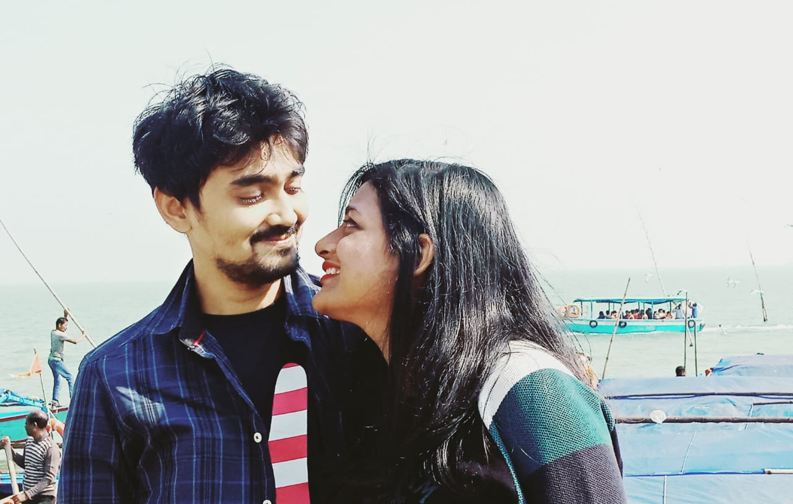
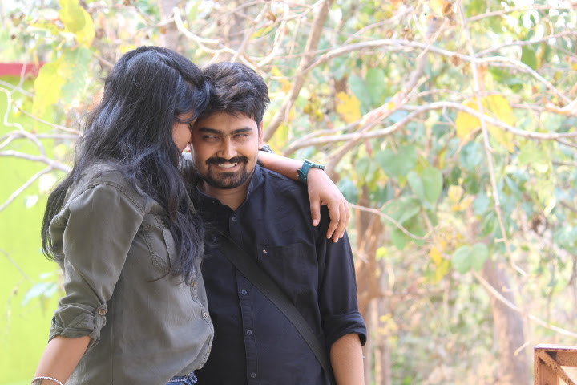

Not giving up!
Cheers to our evergreen love story! Cheeers to all the memories ! Cheers to us!

❤️❤️❤️❤️❤️❤️❤️❤️❤️❤️❤️❤️❤️

A new college , a new class
Thinking of it as a fresh start :)
One day I went to meet a girl ,
But then my eyes moved to the one standing next, the one who sweated and shined like a pearl !
Who was she ? Did I just sense my life changing somehow ? Or just a intution ? Or just nothing ? Oh dear god my heart keeps overthinking..
Should i send her a friend request ? Just stop your questions already . Or wait , does it matter ? Why can't i move on and make friends and be happy. Ok may be I ll send her a friend request, what possibly could i lose more ?
She seems funny and she laughs at my joke,
She is such a sweet girl but somehow is she broke ?
I am in pain and so is she , can we come together and be happy ? :) I hope!
Well well , things turned out well and she says I am her best friend , she wrote my assignments 50 pages front and back :) She is the best !
Today I met her and she brought her best friend ? Oh wait ! Am I not her best friend ?
Why did she say so then? Wait ! Too much thoughts , A girl is so pretty and sublime , she has to be mine :)
She proposed me and I denied ! What an ass , being so naive. What did i fear ? i don't know may be scars from past. But hey ,she is way sweet and way too caring what have i done i started shaming. I wanted her , but was she gone ? But how far ? Does not matter I will bring her back , walking miles and hours.
I won her :) My heart beats for her , a girl so loving I am blessed to have her ! She is alone with me , should i kiss her ? Or is it too fast ? Oh fuck it thoughts ! Her lips tasted like honey in jars!
I am mad for her , why does it make me sad when she is sad ? I can't bear it , she is sad too often , I try to make her laugh but deep down she is broken . Hey love I am there for you always i said. Promises were made , I ain't giving up on you babe , I won't stop loving the one who stood by me , when world turned upon.
We did things together , hardly any mornings or evenings without her ! My life revolved around her like moon revolves around earth ? Wait why is it getting astrological ! May be she was my what stars is to the universe :)
We fought for each other so often ! Some people liked us some did not. Some were jealous creeping up , some loved the way we cheered. We often fought with each other too , But all I could learn from her is we ain't giving up no matter what !
Time flew by ! but love remained constant , we were destined to each other.
But true love doesnot meet ? Ever heard this bull shit ? Yes ? No , but yes ! Oh i do not know !
I messed up and i regret that ! I let another girl come near me , and i did not realise that. She was in pain ! She did not say a word. I failed to listen to her. I wish I could undo the things i did to her. .
But then , the other girl left ! But she did not . She stood by me .And you know why ? Because she is my boo and she be the best ! A girl like her , hard to get :) We ain't giving up on each other !
Time drifted but I stayed near her ! But wait did I give enough time to her ? Why did not i value her ? Why should i realise everything after ? Whats her fault ? She just wanted to be loved ! And i could not show it ! Thats not fair sum , I should not have just blow it!
I regretted day and night , I fought with my inner self for losing jewel of my sight. Yes she is a jewel , thats needs constant care. She is no longer with me and my hearts wrecks.Yes its making me jealous , but I want her to be happy.
I can't still see her sad ,
But her happiness make me jealous of the person who makes her happy. Should i be jealous ? Should i be so selfish ?
I am lost in the well of thoughts,
I wish she stays happy forever ,
She deserves it , she is the best ,
May be she is not my stars to the universe , but certainly she is the brightest shining star in it !
I miss you like hell, like the birds miss the sky , only day I ll forget you is when i die , but hey i won't give up on you , not matter what ! Because selfless love is so pretty , just like you :)
I ain't giving up on you babe , because you stood by me when world turned up :)
A new college , a new class,
thanks for all the memories , sweetheart ♥️
---$UM